기존 대파·양파·깐마늘·배추·무 사진은 Pexels License로 제공됩니다. 검색 출처는 전체 출처 기록에 있습니다.
추가 15품목은 아래 Wikimedia Commons 사진을 사용했습니다. 정사각형으로 크롭하고 480×480 WebP로 변환했으며 색은 바꾸지 않았습니다. CC BY-SA 사진의 변환 파일은 원본과 동일한 라이선스로 제공합니다.
| 품목 | 저자 | 원본 사진 | 라이선스 |
|---|---|---|---|
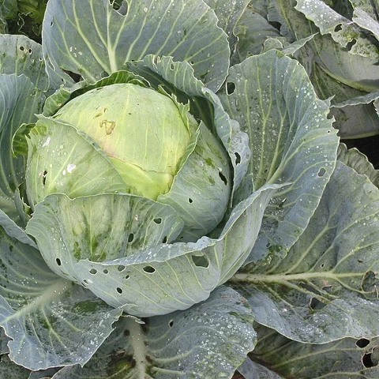 양배추 | Rasbak | Witte kool.jpg | CC BY-SA 3.0 |
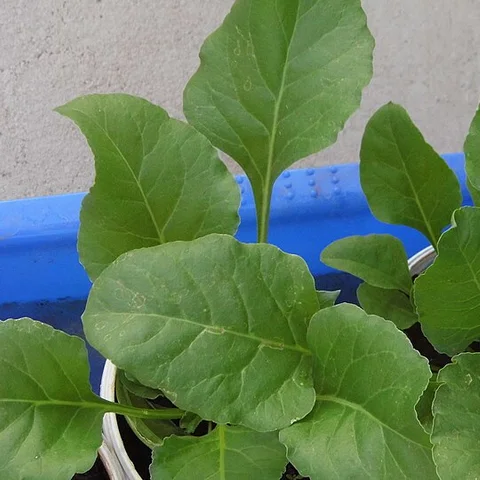 시금치 | Microrao | Spinach leaves 1.jpg | CC BY-SA 4.0 |
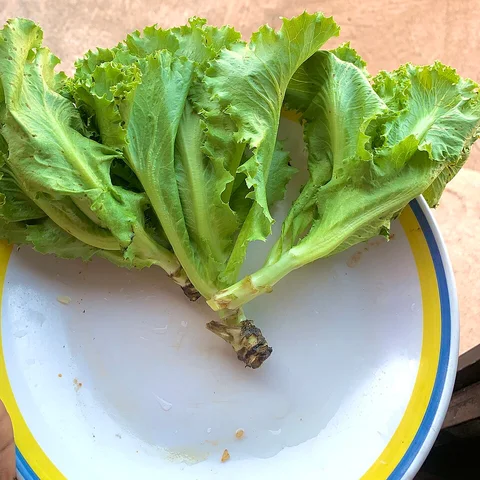 상추 | Uthman salma | Fresh Green Lettuce Leaves on a Plate.jpg | CC0 |
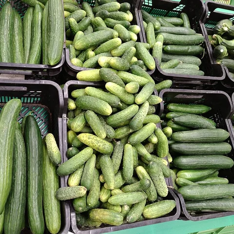 오이 | Misiokk | Cucumbers.jpg | CC BY-SA 4.0 |
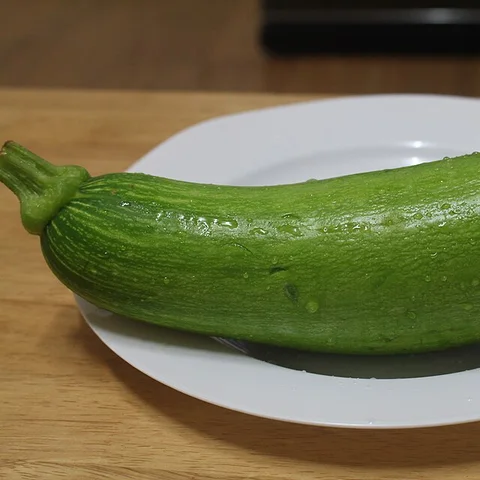 애호박 | Choi Sunyoung | Aehobak 1.jpg | CC0 |
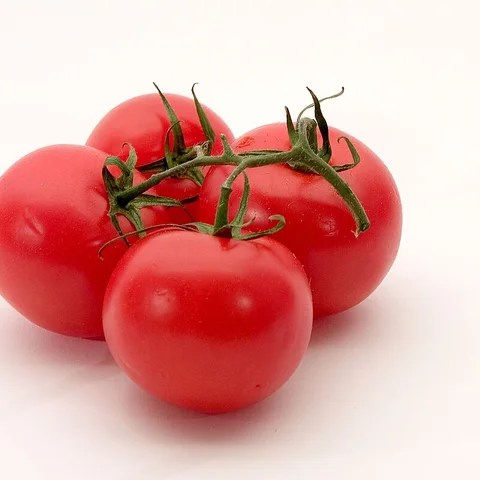 토마토 | Softeis | Tomato je.jpg | CC BY-SA 3.0 |
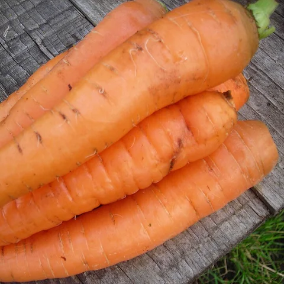 당근 | Medved' | Carrots.jpg | Public domain |
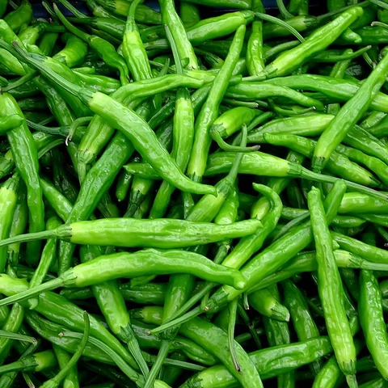 청양고추 | Y-h Kim | Cheongyang-gochu.jpg | CC0 |
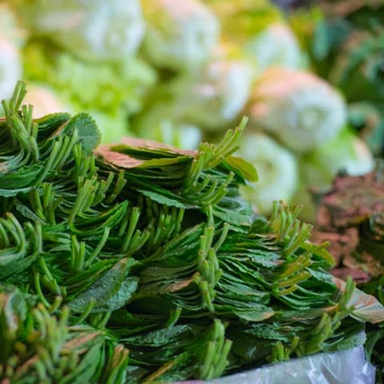 깻잎 | Sous Chef | Perilla leaves.jpg | CC BY 2.0 |
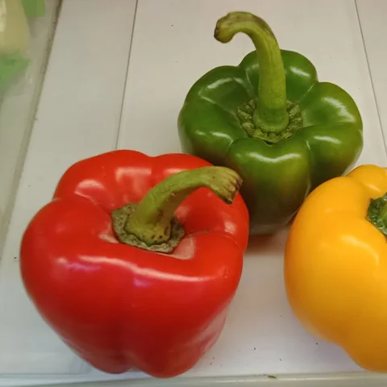 파프리카 | Jiafei Slay Queen | Red, Yellow, and Green bell peppers.jpg | CC0 |
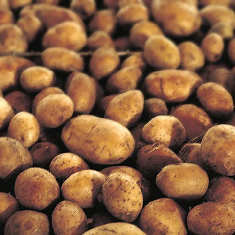 감자 | Potatoes.jpg | Public domain | |
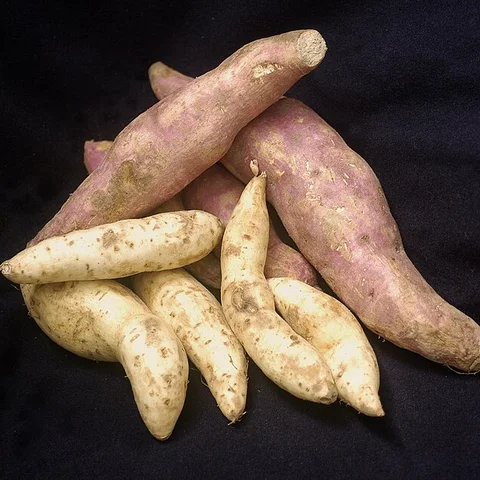 고구마 | CostaPPPR | BatataDoceDSC2615.jpg | CC BY-SA 4.0 |
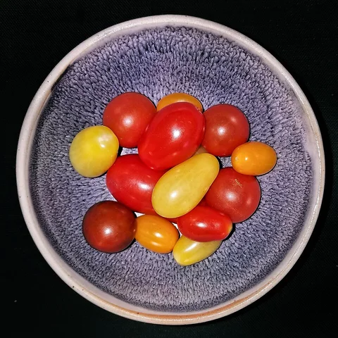 방울토마토 | Daderot | Grape tomatoes - Massachusetts.jpg | CC0 |
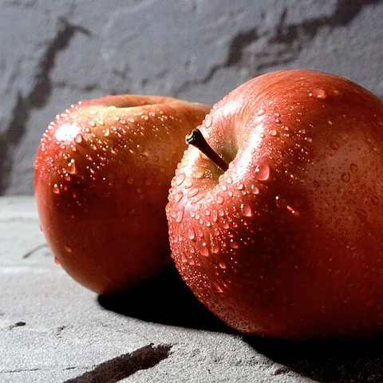 사과 | Scott Bauer, USDA ARS | Fuji apple.jpg | Public domain |
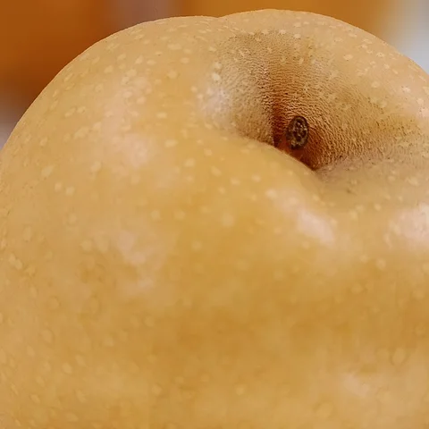 배 | Choe YongWoo | Korean pear 2.jpg | CC0 |